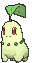
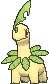
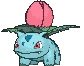
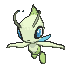
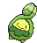
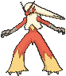

21 + 27 + 12 = 60. ✓ Thirteen Basics, ten Supporters, one ACE SPEC, and nothing over four copies. There is no Rare Candy; Forest of Vitality does its job for both lines.
Thirteen Basics is a 16% mulligan. The opening seven holds an Ogerpon ex 40% of the time. Counting the first draw, 71% of hands hold an Ogerpon or an Ultra Ball, and 85% hold a Chikorita or a card that finds one, which is Poke Pad, Ultra Ball, Dawn, or Celebi. A Forest is there 45% of the time, and 79% counting Celebi and the Ultra Ball that finds it. Only 19% of opening hands hold no Grass Energy, and 10% counting Bug Catching Set.
One of the two Meganium is prized in 19% of games, and both in under 1%.
Pokémon
Teal Mask Ogerpon exx4
Set
SV06: Twilight Masquerade 025/167
Rarity
Double Rare
Type
Grass
HP
210
Stage
Basic
Ability
Teal Dance - Once during your turn, you may attach a basic G Energy card from your hand to this Pokémon. If you attached Energy to a Pokémon in this way, draw a card.
Weakness
Fire ×2
Retreat
1
Tournament
legal (Reg H)
Attack
Myriad Leaf Shower (30+) - This attack does 30 more damage for each energy attached to both Active Pokémon.
Basic, 210 HP, 2 Prizes, Fire Weakness, Retreat 1. Tera. The attacker.
Teal Dance attaches a Basic Grass Energy from your hand to this Pokémon, once during your turn, and draws you a card. Every Ogerpon in play has its own, so three Ogerpon and your attachment put four Energy down a turn and draw three back.
Myriad Leaf Shower is for 30, plus 30 for each Energy attached to both Active Pokémon. Theirs count too. With Meganium in play, each Grass card counts as two, so every card on this Ogerpon adds 60. The Thesis has the table.
As a Tera Pokémon, it takes no damage from attacks while it sits on your Bench. That makes a benched Ogerpon the safe place to keep spare Energy. It stops damage, not damage counters, so the Bench half of Phantom Dive and Dusknoir's Cursed Blast still land.
Four copies. Ultra Ball, Dawn, Celebi, and Bug Catching Set all find it. Poke Pad can't, since it has a Rule Box.
Chikoritax3

Set
ME: Ascended Heroes 008/217
Rarity
Common
Type
Grass
HP
70
Stage
Basic
Weakness
Fire ×2
Retreat
1
Tournament
legal (Reg J)
Attack
Growl - During your opponent's next turn, attacks used by the Defending Pokémon do 20 less damage (before applying Weakness and Resistance).
Attack
Seed Bomb (30)
Basic, 70 HP, Fire Weakness, Retreat 1. Its job is becoming Meganium.
Growl is and makes the Defending Pokémon's attacks do 20 less during their next turn. Seed Bomb is 30 for . Going second with nothing better in front, Growl is a fine turn-one attack.
Three copies against two Meganium, so a prized Chikorita never stops the engine.
Bayleefx2

Set
ME01: Mega Evolution 009/132
Rarity
Common
Type
Grass
HP
110
Stage
Stage 1
Weakness
Fire ×2
Retreat
2
Tournament
legal (Reg I)
Attack
Push Down (50) - Switch out your opponent's Active Pokémon to the Bench. (Your opponent chooses the new Active Pokémon.)
Stage 1, 110 HP, Fire Weakness, Retreat 2. The bridge.
Push Down is 50 for , and it switches their Active to the Bench; they pick the new one. It is rarely the attack you want, since it can't choose the target. Two copies.
Meganiumx2
Set
ME01: Mega Evolution 010/132
Rarity
Rare
Type
Grass
HP
160
Stage
Stage 2
Ability
Wild Growth - Each Basic Grass Energy attached to all of your Pokémon provides GrassGrass Energy. The effect of Wild Growth doesn't stack.
Weakness
Fire ×2
Retreat
2
Tournament
legal (Reg I)
Attack
Solar Beam (140)
Stage 2, 160 HP, Fire Weakness, Retreat 2. The engine.
Wild Growth makes each Basic Grass Energy attached to all of your Pokémon provide . It doesn't stack, so a second Meganium in play adds nothing but insurance. Every cost in the deck halves in cards. Myriad Leaf Shower costs two cards instead of three, Jungle Dump two instead of four, and Venusaur's Retreat 4 is two cards.
The damage doubles too. Myriad Leaf Shower counts Energy, not cards, and the rulings compendium confirms that three Grass under Wild Growth add 180, not 90.
Solar Beam is 140 for , which is two cards. Meganium is not a Pokémon ex, so it is the deck's answer to Crustle.
It is the card their Boss's Orders wants. Two copies, and Lana's Aid brings one back.
Bulbasaurx2
Set
ME01: Mega Evolution 001/132
Rarity
Common
Type
Grass
HP
80
Stage
Basic
Weakness
Fire ×2
Retreat
2
Tournament
legal (Reg I)
Attack
Bind Down (10) - During your opponent's next turn, the Defending Pokémon can't retreat.
Basic, 80 HP, Fire Weakness, Retreat 2. Its job is becoming Venusaur. Bind Down is 10 for , and the Defending Pokémon can't retreat during their next turn. Two copies.
Ivysaurx2

Set
ME01: Mega Evolution 002/132
Rarity
Common
Type
Grass
HP
110
Stage
Stage 1
Weakness
Fire ×2
Retreat
3
Tournament
legal (Reg I)
Attack
Razor Leaf (60)
Stage 1, 110 HP, Fire Weakness, Retreat 3. The bridge. Razor Leaf is 60 for , which is one card under Wild Growth. Two copies.
Mega Venusaur exx2
Set
ME01: Mega Evolution 003/132
Rarity
Double Rare
Type
Grass
HP
380
Stage
Stage 2
Ability
Solar Transfer - As often as you like during your turn, you may use this Ability. Move a Basic Grass Energy from 1 of your Pokémon to another of your Pokémon.
Weakness
Fire ×2
Retreat
4
Tournament
legal (Reg I)
Attack
Jungle Dump (240) - Heal 30 damage from this Pokémon.
Stage 2, 380 HP, 3 Prizes, Fire Weakness, Retreat 4. The router, and the backup attacker.
Solar Transfer moves a Basic Grass Energy from one of your Pokémon to another, as often as you like during your turn. It is what turns three Teal Dances on three different Ogerpon into one attack. Every card on the board can land on the Active before it swings, and the ones it doesn't need stay on the Bench.
Jungle Dump is 240 for , and it heals 30 from this Pokémon. Under Wild Growth that is two cards. At 380 HP it survives almost every single hit on the ladder, Mega Excadrill ex's 330 included. Fire is the exception.
Two copies. Only one ever goes in play; the second is prize insurance, and a second Venusaur on the Bench is 3 more Prizes for a Boss's Orders.
Celebix2

Set
ME01: Mega Evolution 012/132
Rarity
Uncommon
Type
Grass
HP
80
Stage
Basic
Weakness
Fire ×2
Retreat
1
Tournament
legal (Reg I)
Attack
Traverse Time - Search your deck for up to 3 in any combination of Grass Pokémon and Stadium cards, reveal them, and put them into your hand. Then, shuffle your deck.
Attack
Solar Cutter (30)
Basic, 80 HP, Fire Weakness, Retreat 1.
Traverse Time is , and it searches your deck for up to 3 in any combination of Grass Pokémon and Stadium cards. A Forest, a Bayleef, and a Meganium is the usual three, and that is the turn-two Meganium from one attack. Solar Cutter is 30 for .
Two copies. It is the turn-one attack going second when the hand has no Forest, and the late-game answer to a board that lost its line.
Budewx1

Set
ME: Ascended Heroes 016/217
Rarity
Common
Type
Grass
HP
30
Stage
Basic
Weakness
Fire ×2
Tournament
legal (Reg H)
Attack
[] Itchy Pollen (10) - During your opponent's next turn, they can't play any Item cards from their hand.
Basic, 30 HP, Fire Weakness, Retreat 0.
Itchy Pollen costs nothing, does 10, and stops them playing Item cards during their next turn. Going second, that is their turn-two Rare Candy, Poffin, and Ultra Ball gone. It hurts Dragapult most.
Free retreat makes it the pivot too. Promote it after a knockout, move the Energy with Solar Transfer, and retreat it for nothing into the loaded Ogerpon. One copy, and it dies to three damage counters, so never bench it early against Phantom Dive.
Fezandipiti exx1
Set
SV: Shrouded Fable 038/064
Rarity
Double Rare
Type
Darkness
HP
210
Stage
Basic
Ability
Flip the Script - Once during your turn, if any of your Pokémon were Knocked Out during your opponent's last turn, you may draw 3 cards. You can't use more than 1 Flip the Script Ability each turn.
Weakness
Fighting ×2
Retreat
1
Tournament
legal (Reg H)
Attack
Cruel Arrow - This attack does 100 damage to 1 of your opponent's Pokémon. (Don't apply Weakness and Resistance for Benched Pokémon.)
Basic Darkness, 210 HP, 2 Prizes, Fighting Weakness, Retreat 1. The one card here that isn't Grass.
Flip the Script draws 3 cards, once during your turn, if any of your Pokémon were Knocked Out during your opponent's last turn. This deck trades Ogerpon for knockouts, so it fires most turns after the first.
Cruel Arrow is and does 100 to any one of their Pokémon. Wild Growth covers Fez too, so two Grass cards pay for it.
Keep it in your hand until the turn it draws. Bench it and use Flip the Script the same turn. A Fez sitting on the Bench early is 2 Prizes waiting for a Boss's Orders. One copy.
Trainers — Supporters
Lillie's Determinationx4
Set
ME01: Mega Evolution 119/132
Rarity
Uncommon
Type
Trainer - Supporter
Ability
Shuffle your hand into your deck. Then, draw 6 cards. If you have exactly 6 Prize cards remaining, draw 8 cards instead.
Tournament
legal (Reg I)
Shuffle your hand into your deck and draw six, or eight while you still have all six Prizes. Four copies. Going second, the turn-one Lillie's for eight is legal and good. Bench the Basics you want to keep first.
Dawnx2
Set
ME02: Phantasmal Flames 087/094
Rarity
Uncommon
Type
Trainer - Supporter
Ability
Search your deck for a Basic Pokémon, a Stage 1 Pokémon, and a Stage 2 Pokémon, reveal them, and put them into your hand. Then, shuffle your deck.
Tournament
legal (Reg I)
Search your deck for a Basic Pokémon, a Stage 1, and a Stage 2, and put them into your hand. Two copies. That is a whole line in one card, Chikorita, Bayleef, and Meganium or Bulbasaur, Ivysaur, and Venusaur. With a Forest in play, Dawn is a Stage 2 this turn.
Boss's Ordersx2
Set
ME01: Mega Evolution 114/132
Rarity
Uncommon
Type
Trainer - Supporter
Ability
Switch in 1 of your opponent's Benched Pokémon to the Active Spot.
Tournament
legal (Reg I)
Switch one of their Benched Pokémon into the Active Spot. Two copies. Pull the pieces that build their attacker, like a Drakloak or a Kadabra, and any damaged Pokémon ex worth two or three Prizes.
Lana's Aidx1
Set
SV06: Twilight Masquerade 155/167
Rarity
Uncommon
Type
Trainer - Supporter
Ability
Put up to 3 in any combination of Pokémon that don't have a Rule Box and Basic Energy cards from your discard pile into your hand. (Pokémon ex, Pokémon V, etc. have Rule Boxes.)
Tournament
legal (Reg H)
Put up to 3 in any combination of Pokémon without a Rule Box and Basic Energy cards from your discard pile into your hand. One copy. It returns a Meganium, Chikorita, or Bayleef, and the Grass the last knockout took. It can't touch Ogerpon ex, Venusaur, or Fez.
AZ's Tranquilityx1
Set
ME04: Chaos Rising 076/086
Rarity
Uncommon
Type
Trainer - Supporter
Ability
Switch your Active Pokémon with 1 of your Benched Pokémon. If you moved a Pokémon ex to your Bench in this way, heal 80 damage from that Pokémon.
Tournament
legal (Reg J)
Switch your Active Pokémon with one of your Benched Pokémon. If you moved a Pokémon ex to the Bench, heal 80 from it. One copy.
A hurt Ogerpon moved to the Bench heals 80 and then takes no damage while it sits there. That is a full reset for a Supporter. It also gets Venusaur out of the Active Spot without paying Retreat 4.
Trainers — Items
Ultra Ballx4
Set
ME01: Mega Evolution 131/132
Rarity
Common
Type
Trainer - Item
Ability
You can use this card only if you discard 2 other cards from your hand. Search your deck for a Pokémon, reveal it, and put it into your hand. Then, shuffle your deck.
Tournament
legal (Reg I)
Discard 2 other cards from your hand, then search your deck for any Pokémon. Four copies. It is the only Item that searches the whole deck for Ogerpon ex, Venusaur, or Fez. Discarded Grass isn't gone; Lana's Aid and Night Stretcher bring it back.
Bug Catching Setx4
Set
SV06: Twilight Masquerade 143/167
Rarity
Uncommon
Type
Trainer - Item
Ability
Look at the top 7 cards of your deck. You may reveal up to 2 in any combination of Grass Pokémon and Basic Grass Energy cards you find there and put them into your hand. Shuffle the other cards back into your deck.
Tournament
legal (Reg H)
Look at the top 7 cards of your deck and take up to 2 in any combination of Grass Pokémon and Basic Grass Energy. Four copies, and in this deck it almost never misses. Twenty of the 21 Pokémon are Grass, so it finds something over 99.9% of the time and a Grass Energy 83% of the time. Take Energy when the Teal Dances need feeding, and a line piece when they don't.
Night Stretcherx2
Set
SV: Shrouded Fable 061/064
Rarity
Uncommon
Type
Trainer - Item
Ability
Put a Pokémon or a Basic Energy card from your discard pile into your hand.
Tournament
legal (Reg H)
Put a Pokémon or a Basic Energy card from your discard pile into your hand. Two copies. It is the only way back for a Knocked Out Ogerpon ex or Venusaur.
Poke Padx1
Set
ME03: Perfect Order 081/088
Rarity
Uncommon
Type
Trainer - Item
Ability
Search your deck for a Pokémon that doesn't have a Rule Box, reveal it, and put it into your hand. Then, shuffle your deck. (Pokémon ex, Pokémon V, etc. have Rule Boxes.)
Tournament
legal (Reg J)
Search your deck for a Pokémon without a Rule Box. One copy, printed Poké Pad, Perfect Order 081, mark J. It finds Chikorita, Bayleef, Meganium, Bulbasaur, Ivysaur, Celebi, and Budew, and never Ogerpon, Venusaur, or Fez.
Switchx1
Set
ME01: Mega Evolution 130/132
Rarity
Common
Type
Trainer - Item
Ability
Switch your Active Pokémon with 1 of your Benched Pokémon.
Tournament
legal (Reg I)
Switch your Active Pokémon with one of your Benched Pokémon. One copy. Retreat is paid in Energy the next attack needs, and Switch pays in a card instead. Its main job is Venusaur, which Boss's Orders will drag forward.
Unfair Stampx1
Set
SV06: Twilight Masquerade 165/167
Rarity
ACE SPEC Rare
Type
Trainer - Item
Ability
You can use this card only if any of your Pokémon were Knocked Out during your opponent's last turn. Each player shuffles their hand into their deck. Then, you draw 5 cards, and your opponent draws 2 cards.
Tournament
legal (Reg H)
Play it only if one of your Pokémon was Knocked Out during your opponent's last turn. Each player shuffles their hand into their deck, then you draw 5 and your opponent draws 2. The ACE SPEC, Twilight Masquerade 165, mark H.
It is the comeback card, and it is also the Alakazam answer, since Powerful Hand scales with the size of their hand. It is an Item, so the turn still has a Supporter in it. It shuffles your hand too. Play out what you want to keep first. Alternatives has Max Rod if that cost bites.
Trainers — Tool & Stadium
Forest of Vitalityx4
Set
ME01: Mega Evolution 117/132
Rarity
Uncommon
Type
Trainer - Stadium
Ability
Each player's Grass Pokémon can evolve into Grass Pokémon during the turn they play those Pokémon, except during their first turn.
Tournament
legal (Reg I)
Each player's Grass Pokémon can evolve into Grass Pokémon during the turn they are played, except during that player's first turn. Four copies, and it replaces Rare Candy.
From your second turn, a Chikorita played this turn can become Bayleef and then Meganium in the same turn. The same goes for Bulbasaur to Venusaur. Rare Candy can't do that, because it still can't touch a Basic that came into play this turn.
It helps both players. A Crustle deck's Dwebble evolves the turn it lands too. Their own Stadium knocks it off, and at four copies you play another.
Energy
Basic Grass Energyx12
Set
MEE: Mega Evolution Energies 1
Rarity
Common
Type
Energy - Basic
Tournament
legal
Twelve. Your attachment and every Teal Dance spend Grass from your hand, so the hand is where the count matters. Bug Catching Set and Teal Dance's draw refill it, and Lana's Aid and Night Stretcher return what knockouts take. Any Basic Grass print works.
The Thesis
Teal Mask Ogerpon ex hits for 30 plus 30 per Energy on both Actives. That is a slow attack on its own. Three cards make 120.
Meganium doubles it. Under Wild Growth each Grass card counts as two Energy, so every card on the Ogerpon adds 60 instead of 30. Venusaur feeds it.Solar Transfer moves every Grass on the board onto whichever Ogerpon is Active, so the Teal Dances of the benched Ogerpon become damage for the one in front.
Grass on the Active Ogerpon
Myriad Leaf Shower
One-shots
2
150
Alakazam 140, Slowking 120
3
210
any 210 HP Basic ex; a Mega Excadrill ex that swung for 330
4
270
an attacking Dragapult ex, Blaziken ex, or N's Zoroark ex
5
330
Dragapult ex with no Energy, Mega Excadrill ex with one
6
390
every printed HP in the format, where 380 is the top
Add 30 for each Energy on their Active. An attacking Dragapult ex holds two for Phantom Dive, which is why four cards kill it. A Mega Excadrill ex that used Maximum Drilling at full power holds five, which is why three cards kill that one.
Venusaur is the second attacker. Jungle Dump is 240 and heals 30 for two cards, on a 380 HP body that outlasts almost everything but Fire. When no Ogerpon can reach the number this turn, Venusaur holds the line.
The Hard Rules
A few rules decide most games with this deck. The card sections explain the cards; this section explains the decisions.
Opening turns
When
Do this
Setup
Going second with Budew, lead Budew. Going second with Celebi and no Forest, lead Celebi. Otherwise lead an Ogerpon ex.
Your first turn
Bench a Chikorita, then a Bulbasaur and every Ogerpon ex you hold. Teal Dance each Ogerpon. Attach to the Ogerpon that swings next turn.
First turn, going second
Attack with what is in front. Itchy Pollen, Traverse Time, or Growl. Play Lillie's for eight unless the hand already holds a line.
First turn, going first
Items only. Ultra Ball, Poke Pad, and Bug Catching Set dig for the line.
Second turn
Forest, then Meganium before Venusaur. Doubling matters more than moving.
Where the Energy goes
Rule
Why
Put on the Active only what the knockout needs.
Every card on it goes to the discard pile when it falls.
Park the rest on benched Ogerpon ex.
A benched Ogerpon takes no damage from attacks. Meganium and Venusaur do.
Count their Energy before you move yours.
Each one on their Active adds 30. An attacking Dragapult ex dies to four cards, not five.
Teal Dance every Ogerpon, every turn.
Each one draws a card, and the Energy is safe on the Bench until you need it.
Never retreat by discarding a stack.
Switch, AZ's Tranquility, and Budew's free retreat all cost less.
Ogerpon or Venusaur
Situation
Attack with
Their Active has 240 HP or less, and Venusaur is already in front
Venusaur. Jungle Dump kills it for two cards and heals 30.
Anything bigger
Ogerpon ex, with the cards the table above calls for.
No Ogerpon can reach the number this turn
Venusaur, if it survives their next hit.
Their attacker is Fire
Whichever gives up fewer Prizes. Blaziken ex hits for 400 into Grass and nothing here survives it.
Six Prizes is three Ogerpon, or Venusaur and one Ogerpon and one more. The deck plans to lose Ogerpon; four copies and Night Stretcher are there for it. Venusaur is the one to protect.
One Venusaur in play, ever. It sits on the Bench as 3 Prizes, and Boss's Orders reaches it. Switch and AZ's Tranquility are how it gets home.
Fez comes down only on the turn it draws. Otherwise it is 2 Prizes on the Bench for nothing.
A knocked out Meganium costs 1 Prize and the whole doubling. Keep the second one coming, and use Lana's Aid on it.
The Energy Engine
Source
From
To
Costs
Your attachment
hand
any of your Pokémon
once a turn
Teal Dance
hand
that Ogerpon ex
nothing; once per Ogerpon, and it draws a card
Solar Transfer
any of your Pokémon
any other
nothing; as often as you like
Wild Growth
n/a
n/a
nothing; every Grass in play counts twice
Bug Catching Set
top 7 of your deck
hand
an Item; up to 2 cards
Lana's Aid
discard pile, up to 3
hand
your Supporter
Night Stretcher
discard pile, 1
hand
an Item
The hand runs dry before the board does. Three Ogerpon and your attachment spend four Grass a turn, and the three Teal Dance draws only give three cards back. Bug Catching Set is how the hand keeps up.
The board is the bank. Energy on a benched Ogerpon is safe from attacks and one Solar Transfer from the Active. A knockout only costs you what was on the Pokémon that fell.
Game Plans
1. Turn one
Going second, you attack. Budew's Itchy Pollen is free and shuts off their Items for a turn. Celebi's Traverse Time costs one Grass and finds the Forest and a Meganium line. Lillie's draws eight while you still have all six Prizes.
Going first, you can't attack or play a Supporter. Bench a Chikorita, a Bulbasaur, and your Ogerpon ex, and Teal Dance every Ogerpon. Abilities work on turn one.
Either way, put your attachment on the Ogerpon that will be Active next turn.
2. The Meganium turn
Turn two is Meganium, and Dawn or Celebi makes it happen.
Play Forest of Vitality.
Evolve Chikorita to Bayleef to Meganium. A Chikorita played this turn works, thanks to Forest.
Teal Dance every Ogerpon, and attach to the Active one.
Myriad Leaf Shower.
An Ogerpon that got your attachment and its own Teal Dance on both turns holds four cards, which is 270. Without Venusaur that Energy can't move, so aim the attachments at one Ogerpon.
3. The Venusaur turn
Once Venusaur is in play, every Grass on the board can reach the attacker.
Teal Dance every Ogerpon, each drawing a card.
Attach for the turn.
Read their HP and their Energy, and pick the card count from the table.
Solar Transfer exactly that many onto the Active Ogerpon. Leave the rest on the Bench.
Attack.
Bench Bulbasaur early so Venusaur is one Forest turn away when Meganium is already up.
4. After a knockout
They take an Ogerpon and whatever was on it. The next turn rebuilds it.
Promote the next Ogerpon, or Budew if you want the free retreat later.
Bench Fez and use Flip the Script for three cards.
Unfair Stamp leaves them two cards to find the next hit.
Night Stretcher returns the fallen Ogerpon. Lana's Aid returns three Grass, or a Meganium.
Solar Transfer moves the banked Energy onto the new Active. It swings at full size on the turn it is promoted.
5. Bench discipline
The Bench holds five, and a working board fills it with Meganium, Venusaur, two Ogerpon ex, and one spare.
The spare is a Chikorita or Bulbasaur while a line is missing, and Fez on the turn it draws.
Venusaur's second copy stays in hand. See The Prize Tax.
Against Phantom Dive, bench Budew and Chikorita only when they are about to matter. Six damage counters kill Budew outright.
Versus the Ladder

Shares from the Limitless online ladder, 30C Standard, checked September 29, 2026. The record is the Venusaur build's own, 104-106 overall. The Arboliva build of the same shell is 57%.
Deck
Share, record
The plan
Dragapult
10.0%, 8-12
Dragapult ex is 320, and an attacking one holds two Energy, so four cards kill it. Phantom Dive's six Bench counters ignore Tera, so bench the Basics late. Budew's Item lock on turn one slows their Rare Candy.
Slowking
6.0%, 5-7
Single-Prize. Two cards kill a Slowking at 120. Don't stack more than the knockout needs, and don't feed it Venusaur's 3 Prizes.
N's Zoroark
6.0%, 8-5
280 HP, and Night Joker needs two Energy, so four cards kill an attacking one.
Alakazam Dudunsparce
5.8%, 6-9
Two cards kill Alakazam at 140. Powerful Hand places 2 counters per card in their hand, so Unfair Stamp's two-card hand makes the next one small.
Dragapult Dusknoir
5.7%, 3-7
Cursed Blast places 13 counters anywhere, which is 130. Meganium's 160 survives one; Chikorita and Bayleef don't.
Mega Excadrill
4.6%, 14-4
The best matchup. Venusaur's 380 survives Maximum Drilling's 330, and an Excadrill that swung for 330 holds five Energy, so three cards kill it.
Dragapult Blaziken
2.6%, 1-7
The bad matchup. Blaziken ex's Smolder-sault is 200, doubled to 400 by Fire Weakness, and it one-shots everything here. Four cards kill a Blaziken ex holding its two Energy.
Crustle
2.5%, n/a
Mysterious Rock Inn stops all damage from Pokémon ex, so neither Ogerpon nor Venusaur touches it. Meganium's Solar Beam is 140 into its 150, and Ivysaur's Razor Leaf finishes. Meganium survives Superb Scissors at 120.
Test and Tune
The list is a hypothesis, and games on Live are the data.
Symptom
Fix
Meganium keeps arriving on turn three
3rd Dawn over the Poke Pad
Teal Dances go unfed
13th Basic Grass Energy over a Night Stretcher
Every knockout empties the Energy bank
Max Rod over Unfair Stamp
Boss's Orders keeps taking Meganium
3rd Meganium over a Celebi, and bench the spare late
Venusaur gets stranded in the Active Spot
2nd Switch over the Poke Pad
Venusaur never needs to come down
cut the Venusaur line to 1-1-1 for a 2nd Budew, a 13th Grass, and a 3rd Celebi
Fez breaks the rhythm
3rd Celebi over Fez
Alternatives
Card
Swaps for
Play it when
Max Rod (ACE SPEC)
Unfair Stamp
the Energy bank keeps running dry, or the Stamp's shuffle costs you held cards. It returns up to 5 Pokémon and Basic Energy from the discard pile.
Hero's Cape (ACE SPEC)
Unfair Stamp
Dragapult Blaziken keeps showing up. A Venusaur in the Cape has 480 HP and survives Smolder-sault's 400.
Mega Meganium ex (Ascended Heroes 010)
1 Celebi
you want a second payoff on the Chikorita line. Giant Bouquet is for 70 plus 50 for each Grass Energy on it. It is a 3-Prize Mega.
Arboliva ex line (Destined Rivals 021-023)
the Venusaur line
you want the ladder's best version of this shell, at 57%. Oil Salvo is 20 six times, anywhere, for one Grass, and Dolliv heals 40.
Wally's Compassion
AZ's Tranquility
Venusaur tanks more than it moves. It heals all damage from it, and the Energy goes to your hand for the Teal Dances.
Energy Switch
the Poke Pad
Venusaur is late too often. It moves one Basic Energy between your Pokémon, which is one Solar Transfer.
Meowth ex
never
Xero's call. It is a 2-Prize body on the Bench for one Supporter.
Team Rocket's Petrel
never
Celebi and Bug Catching Set find the pieces without spending a Supporter.
 Overgrowth
Overgrowth  x4
x4 x2
x2![Boss's Orders [Ghetsis]](./assets/654453_bosss-orders-ghetsis.jpg) x2
x2 x4
x4 x2
x2